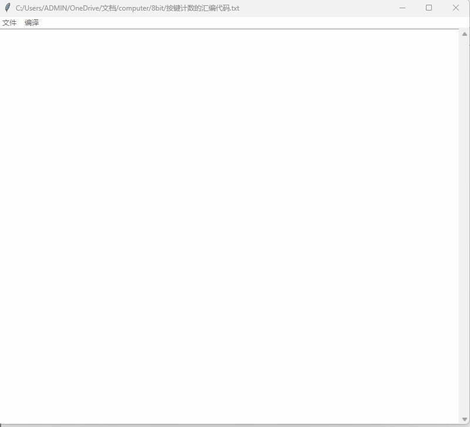

按键计数功能
本节我们再来做个简单的汇编程序，完成一个按键计数的功能。我们现在的计算机一共有两个按键，按键计数的功能就是当按第一个按键的时候数字加1，按第二个按键的时候数字清零。功能很简单吧，我把编写好的编代码列在下面。
MOV [0], 0 //注释：把地址0的内存设置0
MOV [1], 1 //注释：把地址1的内存设置1
MOV [3], 2 //注释：按钮1的数值
MOV [4], 4 //注释：按钮2的数值
LOOP:
OUT [0] //注释：把计算结果显示到七段发光二极管
IN [5] //注释：读取按钮输入，保存到内存地址5中
JUMPIF KEY2, [5], [4] //注释：如果内存地址5值代表按钮2，跳转到KEY2处
JUMPIF KEY1, [5], [3] //注释：如果内存地址5值代表按钮1，跳转到KEY1处
JUMP LOOP //注释：跳转到LOOP处，循环
KEY1:
ADD [0], [0], [1] //注释：内存地址0处的值加1
JUMP LOOP //注释：跳转到LOOP处，循环
KEY2:
MOV [0], 0 //注释：内存地址0的值重置为0
JUMP LOOP //注释：跳转到LOOP处，循环
具体的使用方式的演示动画如下图所示。
